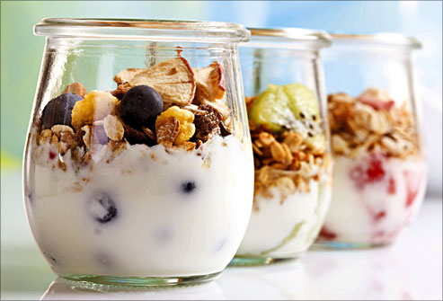

Fruit cereal yogurt
Ingredients
fruit, cereal(sugar free), chia seeds, yorgurt, milk
1. fermented yorgurt mix milk with room temperature until the solidification
2. mix into fruits , cereals, and Chia seeds
Scremble eggs
Ingredients
2 eggs, 2 spoons of milk and cheese powder, few pepper and salt
1. mix the eggs and milk in the cup
2. microwave for 45s and stir, and microwave 30~45s until sremble eggs are formed
3. sprinkle on the cheese salt snd pepper
Tuna salad with twang
Ingredients
10 oz. canned tuna
2 T mayonnaise
½ C red bell pepper, finely diced
½ C celery, finely diced
1 T fresh chives, finely chopped (or ½ T onion)
1½ T sweet pickle relish
1 T Dijon mustard
1 t. RFS Cherry Pepper Blend
½ t. curry powder
May substitute any RFS blend to moderate flavor or intensify spiciness.
1. Combine above ingredients in medium bowl and mix together.
2. Serve tuna salad on a cold plate with mixed greens or create a tuna melt sandwich.
Blueberry yourgurt
Ingredients
10 blueberries
1 tbsp. plain yogurt (Greek yogurt is the best)
1. Mash the blueberries with a spoon (or fork)
2. Stir in the yogurt; mix well
3. Apply to a clean face (avoid the eye area)
4. Let sit for 15-20 minutes
5. Rinse with lukewarm water
Broiled Salmon with Broccoli and Cheese
Ingredients
1 lb broccoli
3½ oz. butter salt and pepper to taste
5 oz. grated cheddar cheese
1½ lbs salmon
1 lime (optional)
1. Preheat the oven to 400°F (200°C), preferably using the broiler setting.
2. Cut the broccoli into smaller florets and let simmer in lightly salted water for a couple of minutes. Make sure the broccoli maintains its chewy texture and delicate color.
3. Place the drained broccoli in a well-greased baking dish. Add butter and pepper to taste.
4. Sprinkle cheese on top of the broccoli and bake in the oven for 15-20 minutes until the cheese turns a golden color.
5. Broil the salmon in plenty of butter, a few minutes on each side. The lime can be fried in the same pan or be served raw.
Cauliflower Cups with Herb Pesto and Lamb
Ingredients
2 Tbsp refined coconut oil, melted
4 cups coarsely chopped fresh cauliflower
2 large eggs
½ cup almond meal
¼ tsp black pepper
1 tsp Mediterranean Seasoning (see recipe below)
¾ cup firmly packed fresh cilantro
½ cup firmly packed fresh parsley
¼ cup firmly packed fresh mint
⅓ cup pine nuts, toasted
¼ cup olive oil
1. Bake cauliflower cups for 10~15 mins or until cauliflower cups are lightly browned and centers are set. Place on wire rack but do not remove from the pan.
2. Cook and stir for 1 minute. Spoon lamb mixture evenly into cauliflower cups.
3. In a dry small skillet toast fennel seeds over medium-low heat for 1 to 2 minutes or until fragrant, shaking skillet occasionally. Remove from the heat; cool about 2 minutes. Transfer seeds to a spice grinder; grind to a powder.
The Sriracha Cookbook

Ingredients
4 cups vegetable stock
½ cup sriracha
6 roma tomatoes, diced
3 carrots, chopped
3 celery stalks, chopped
1 red onion
1 large zucchini, halved lengthwise and chopped
1. In a large Dutch oven or soup pot over medium-high heat, combine the stock, sriracha, tomatoes, carrots, celery, onion, zucchini, garlic, bay leaves, and oregano.
2. Bring to a boil, then immediately lower the heat. Cover and simmer for 15 minutes.
3. Discard the bay leaves. Stir in the beans and kale. Cook until both are tender, 5 to 7 minutes.
4. Stir in the lemon juice, then season with salt and pepper to taste. Serve immediately.
grilled fish
Ingredients
1 garlic
6 spoond oil
1 teaspoon dried basil
2 (6 ounce) fillets halibut
1. In a stainless steel or glass bowl, combine garlic, olive oil, basil, salt, pepper, lemon juice, and parsley.
2. Place the halibut filets in a shallow glass dish or a resealable plastic bag, and pour the marinade over the fish. Cover or seal and place in the refrigerator for 1 hour, turning occasionally.
3. Preheat an outdoor grill for high heat and lightly oil grate. Set grate 4 inches from the heat.
4. Remove halibut filets from marinade and drain off the excess. Grill filets 5 minutes per side or until fish is done when easily flaked with a fork.
Ashley Graham’s Beet Smoothie
Ingredients
1 medium beet
chopped into pieces
2 stalks of kale
the juice of 1 lemon
1-inch piece of ginger
1. Blend ingredients in a blender until smooth.
2. Add an extra ½ cup of water if needed for desired consistency and enjoy!
Vegetable soup
Ingredients
1 medium head cabbage chopped
1 onion chopped
3 large carrots chopped
3 stalks celery chopped
3 tomatoes chopped
16 ounces frozen green beans
2 (1 ounce) packages dry onion soup mix 6 cups water
1. Combine water, soup mix, and vegetables in a large stock pot. Bring to a boil. Reduce heat, and simmer until the vegetables are tender.
Brown Sugar and Honey Limeade
Ingredients
1¾ cups freshly squeezed lime juice and pulp
10 cups cool water
½ cup honey, warmed
½ cup brown sugar
2 limes, sliced
½ cup honey, warmed
1.Combine the lime juice and water in a pitcher
mix in the warm honey. Stir the brown sugar into the mixture until dissolved completely. Pour over ice and top with a lime slice to serve.
Blueberry Limeade
Ingredients
2 cups fresh blueberries
6 cups water, or more as needed
½ white sugar, or to taste
½ cup brown sugar
⅓ cup freshly squeezed lime juice
1.lend blueberries, sugar, lime juice, and 1 cup water together in a blender
2. pour into a pitcher
3. Add remaining water and stir.
Guilt-Free Snack Mix
Ingredients
4 cups crispy corn cereal squares
1 cup dried mixed fruit, chopped
½ cup yogurt covered raisins
½ cup banana chips
⅓ cup chopped mixed nuts
1.mix together crispy corn cereal squares, dried fruit mix, yogurt covered raisins
2. mixed nuts and banana chips. Store in sealed, airtight containers.